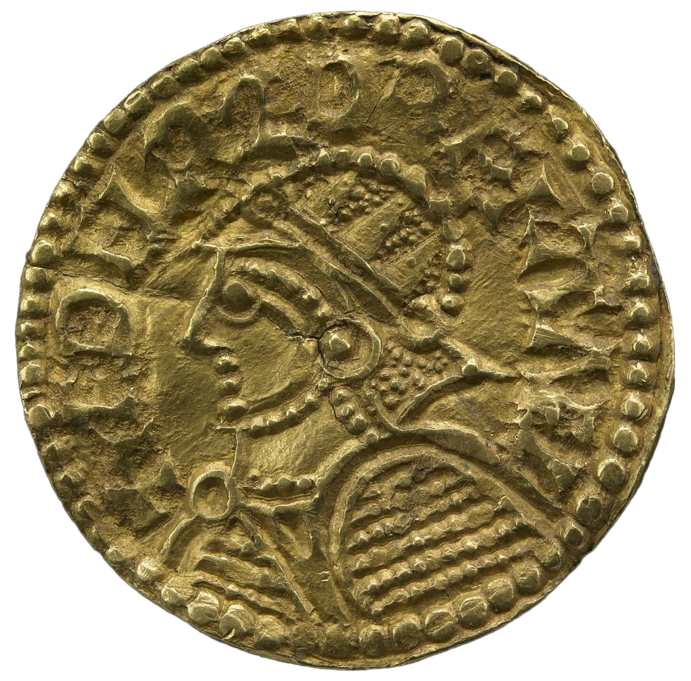
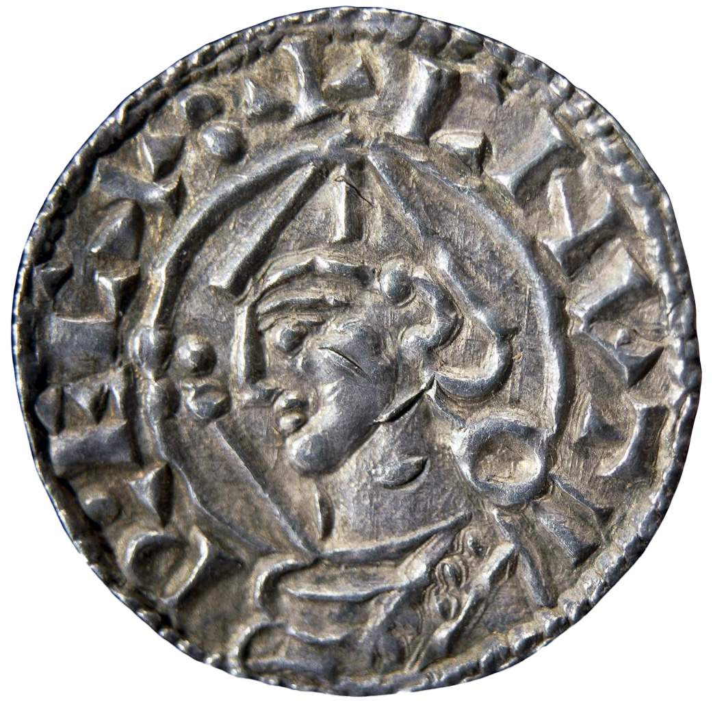

Debate: Vikings in England
Left: Gold mancus of Aethelred II "the Unready", c. 1003-9, + ETHELRED REX ANGL(orum)
Right: Silver penny of Cnut, c. 1029-36, +CNVTR.ECX:
Proposition: England should be a part of a Scandinavian kingdom.
Remember: you will be called upon to answer at least one of the questions as part of the debate; you may (should) also take part in other parts if you have things to say that differ from what your teammates have said.
Debate:
Team 1: argue for the Proposition
Team 2: argue against the Proposition
Assigned questions - Team 1:
1. Background - What was the Danelaw? Discuss its origins, how it was organized, and what happened to it.
2. Background - What was the St. Brice's Day Massacre? Give background and events.
3. Background - How and when did the Scandinavian regions become Christian?
4. Presentation of the proposition: what is the topic? what is the basis of your argument?
5. Arguments - present one argument that favors your side, and illustrate it from a primary source if possible
6. Arguments - present one argument that favors your side, and illustrate it from a primary source if possible
7. Arguments - present one argument that favors your side, and illustrate it from a primary source if possible
8. Do the summary, summarizing your team's arguments and state why they are preferable (you can't do this ahead of time).
Assigned questions - Team 2:
1. Background - What are the origins of the kingdoms of Denmark, Sweden, and Norway, up to the year 990?
2. Background - Who was Wulfstan of York, and what did he say in The Sermon of the Wolf to the English of 1014?
3. Background - Describe the background and rule of Aethelred the Unready and relate the activities of Swein Forkbeard and Cnut in England.
4. Presentation of the proposition: what is the topic? what is the basis of your argument?
5. Arguments - present one argument that favors your side, and illustrate it from a primary source if possible
6. Arguments - present one argument that favors your side, and illustrate it from a primary source if possible
7. Arguments - present one argument that favors your side, and illustrate it from a primary source if possible
8. Do the summary, summarizing your team's arguments and state why they are preferable (you can't do this ahead of time).
Primary source evidence
The Sermon of the Wolf to the English can be found online here; you will need to use the username "student" and the password "medieval".
The history of England known as the Anglo-Saxon Chronicle describes, year-by-year, events in England. You can find it online here. Read as much as you like, but especially, in the Eleventh Century, the years A.D. 1000-1031.
Secondary source information
There is A LOT of junk out on the internet about the Vikings! Do not rely on it! Instead, here are two articles that have been downloaded from the book Peter Sawyer, ed., Oxford Illustrated History of the Vikings (Oxford: Oxford University Press, 1997):
Niels Lund, "The Danish Empire and the End of the Viking Age"
Simon Keynes, "The Vikings in England, c. 790-1016"
For a really interesting (and somewhat gory) article about the archaeology of the St. Brice's Day Massacre, see Nadia Durrani, "Vengeance on the Vikings," Archaeology Magazine 2013.